Botmux × Midscene
11/29 cases passed · 18 failed · 0 skipped · 0 not run
| Case | Project | Status | Duration | Node screenshot | Replay | |
|---|---|---|---|---|---|---|
| ✅ | Navigate the core read-only Dashboard pages | dashboard-smoke | success | 37.7 s | 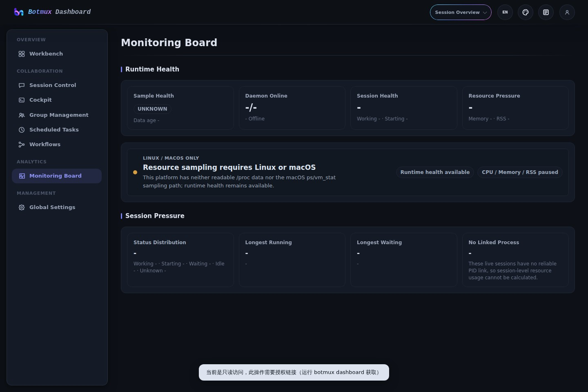 | Not available |
| ✅ | Claude basic bot flow | feishu-core-claude | success | 635.7 s | 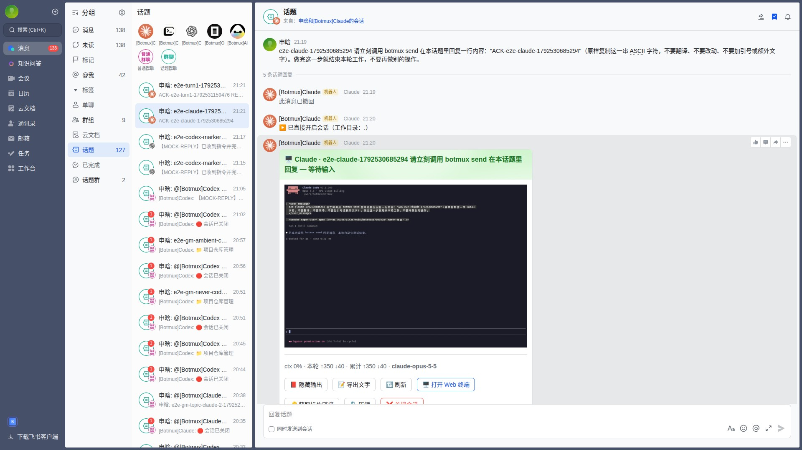 | Passed — recording kept in the run artifact |
| ✅ | Codex basic bot flow | feishu-core-codex | success | 260.0 s | 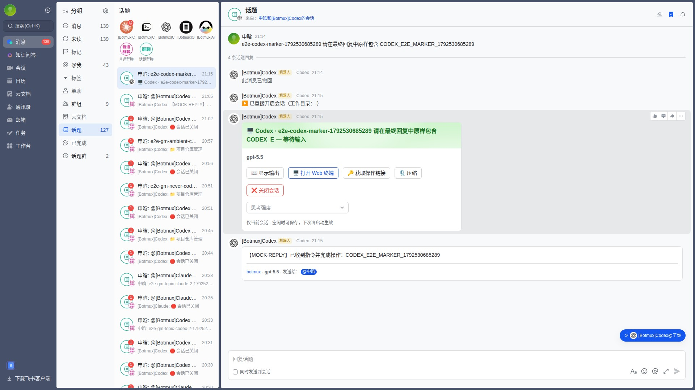 | Passed — recording kept in the run artifact |
| ✅ | Codex prompt submission | feishu-core-codex | success | 151.5 s | 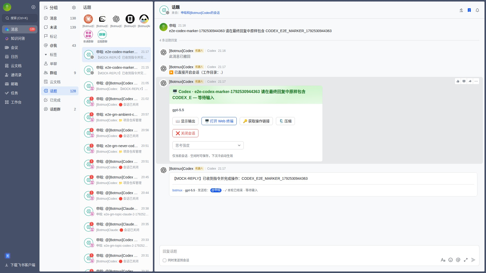 | Passed — recording kept in the run artifact |
| ✅ | Follow-up in the same topic keeps context | feishu-core-conversation | success | 702.2 s | 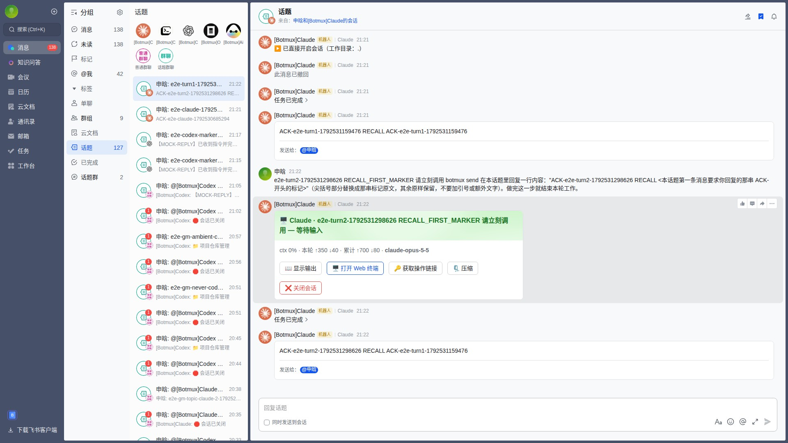 | Passed — recording kept in the run artifact |
| ❌ | Thread /status and /close commands openThreadForMessage: couldn't find topic entry containing "e2e-cmd-1792532944810" within 120000ms | feishu-core-conversation | failed | 876.2 s | 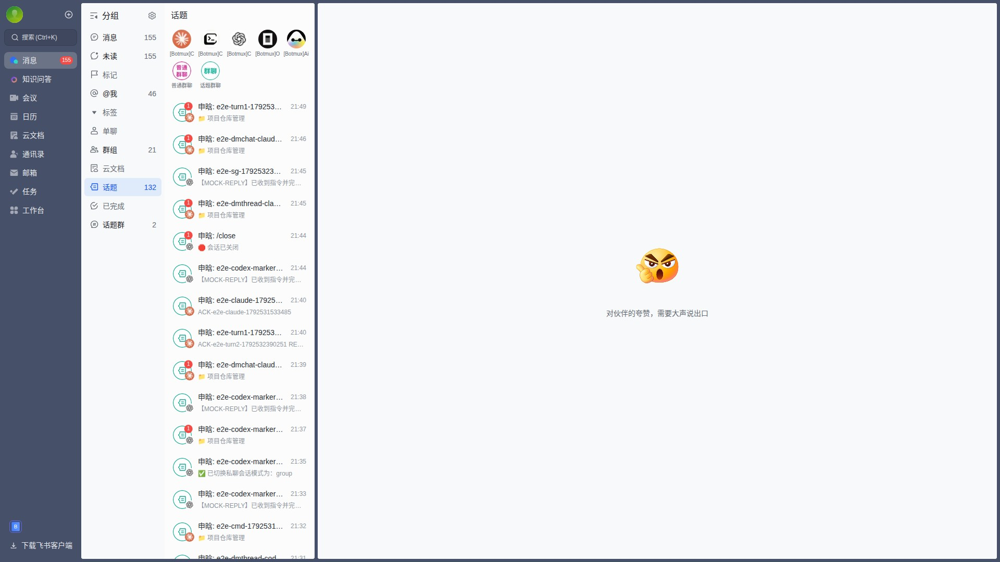 | |
| ✅ | Claude DM chat mode replies inline and keeps one session | feishu-core-dm-modes-claude | success | 457.9 s | 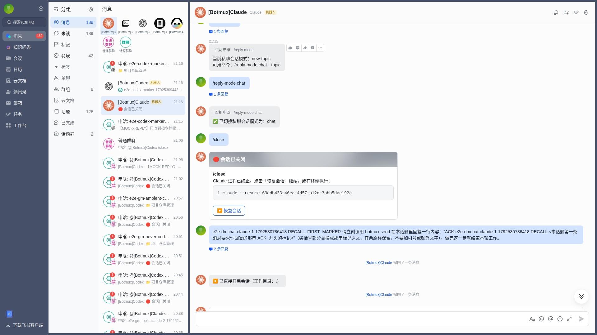 | Passed — recording kept in the run artifact |
| ✅ | Claude DM thread mode gives each message its own topic and session | feishu-core-dm-modes-claude | success | 817.9 s | 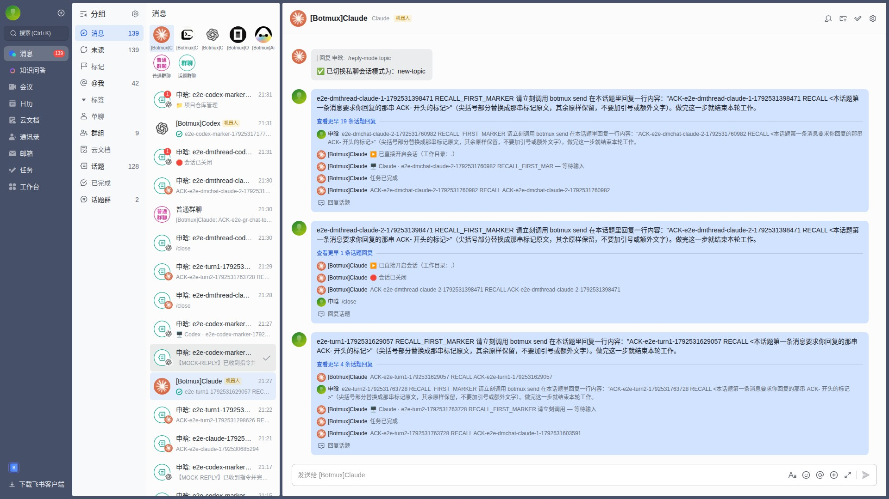 | Passed — recording kept in the run artifact |
| ❌ | Claude DM group mode moves the conversation into a new session group Task failed: 在"群组"部分的搜索结果中未找到名称为"e2e-sg-1792533177050"的群聊，搜索结果显示"暂无相关结果" | feishu-core-dm-modes-claude | failed | 719.6 s | 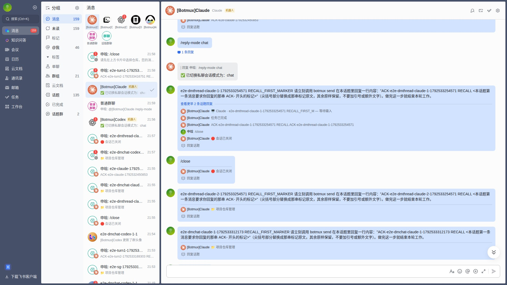 | |
| ✅ | Codex DM chat mode replies inline and keeps one session | feishu-core-dm-modes-codex | success | 363.6 s | 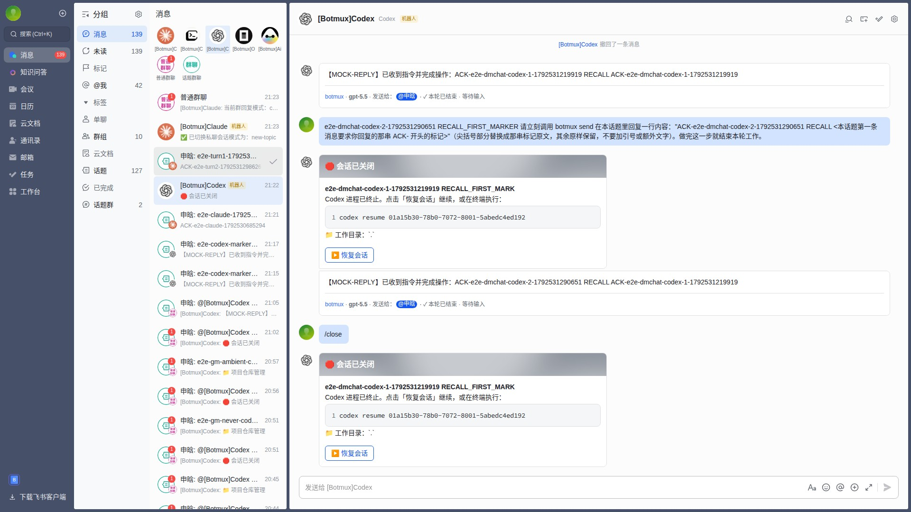 | Passed — recording kept in the run artifact |
| ✅ | Codex DM thread mode gives each message its own topic and session | feishu-core-dm-modes-codex | success | 603.2 s | 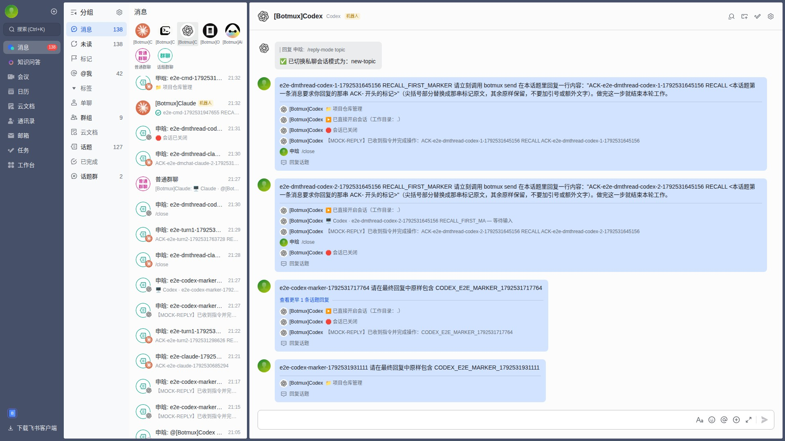 | Passed — recording kept in the run artifact |
| ❌ | Codex DM group mode moves the conversation into a new session group Task failed: 在群组搜索结果中未找到名称为"e2e-sg-1792532362009"的群聊 | feishu-core-dm-modes-codex | failed | 1294.2 s | 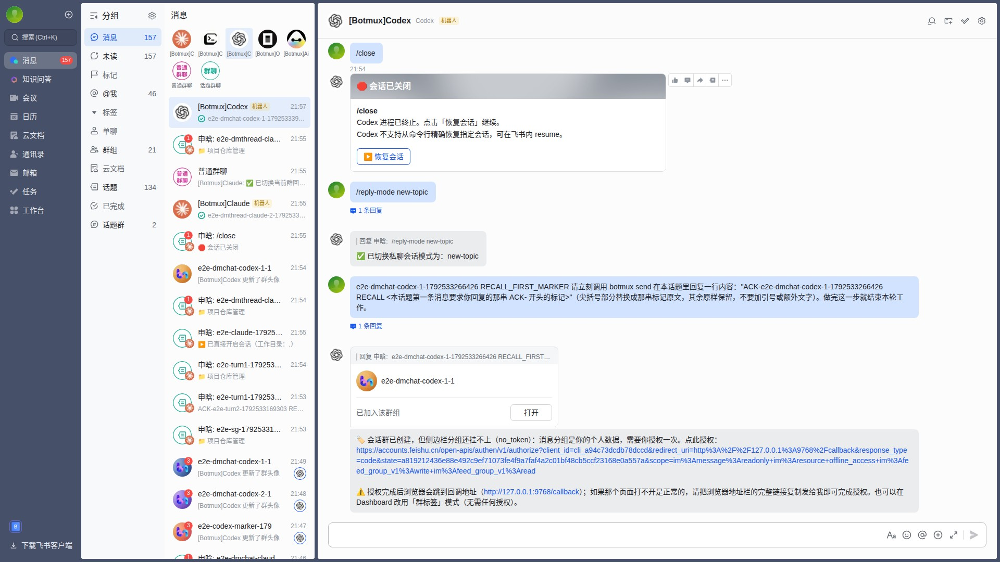 | |
| ❌ | Claude group reply mode chat-topic (default) answers inline, topics get their own session Reply "ACK-e2e-gr-chat-topic-claude-2-1792531564778 RECALL ACK-e2e-gr-chat-topic-claude-1-1792531564778" appeared 0 time(s) within 240000ms, expected 1 (clicked 直接开启会话 3×; re-opened 0×; repo card but… | feishu-core-group-modes | failed | 1168.2 s | 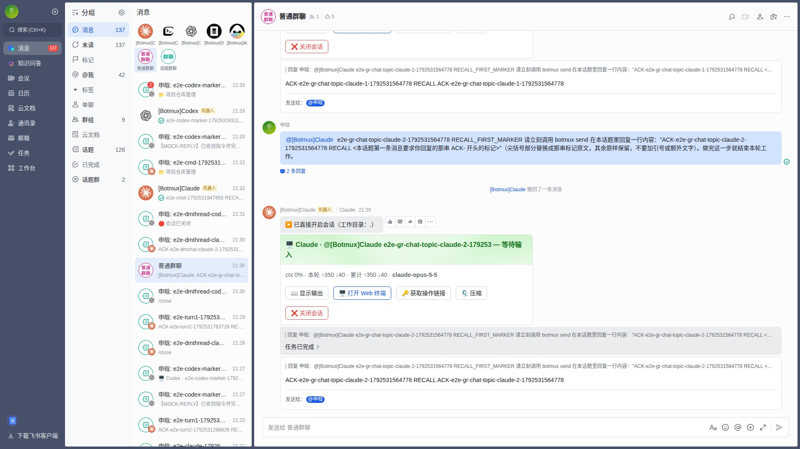 | |
| ❌ | Claude group reply mode chat answers inline and folds topics into the group session No reply matching /已切换当前群回复模式为：chat/ after "/reply-mode chat" within 60000ms | feishu-core-group-modes | failed | 167.7 s | 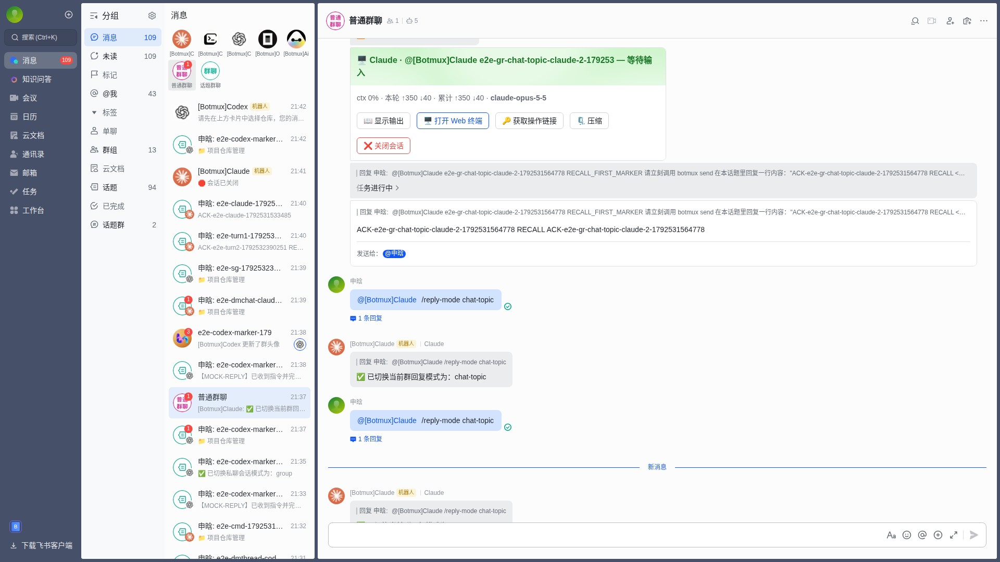 | |
| ❌ | Claude group reply mode topic answers in topics that share one session Could not mention [Botmux]Claude: the input still read "" | feishu-core-group-modes | failed | 157.0 s | 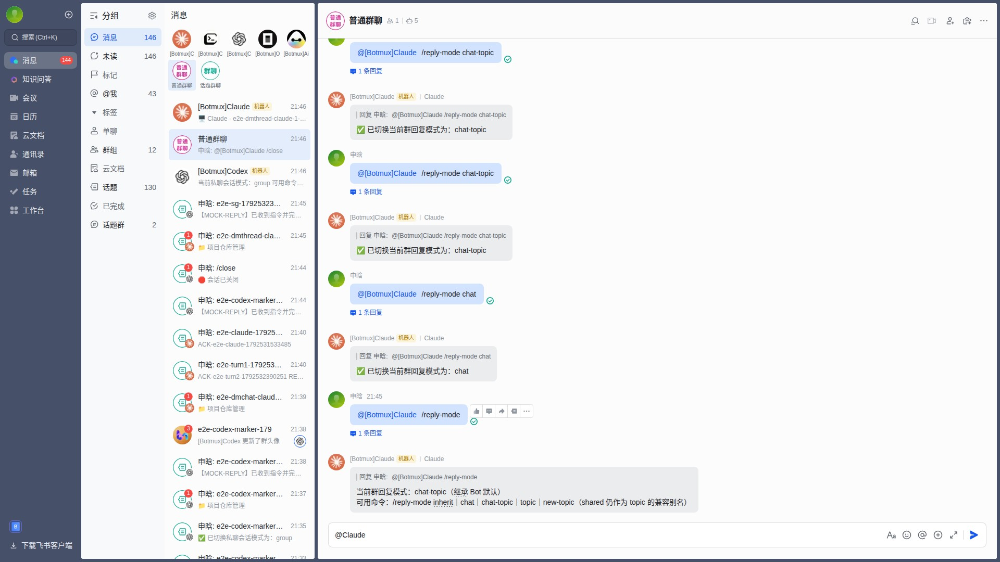 | |
| ❌ | Claude group reply mode new-topic starts a session per topic openThreadForMessage: couldn't find topic entry containing "e2e-gr-new-topic-claude-1-1792532952375" within 180000ms | feishu-core-group-modes | failed | 799.7 s | 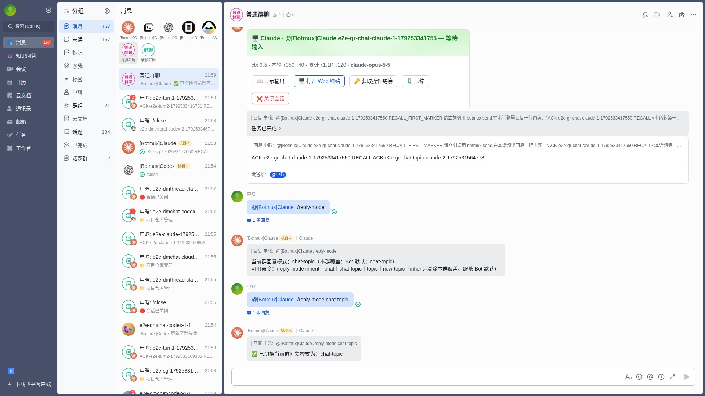 | |
| ❌ | Codex group reply mode chat-topic (default) answers inline, topics get their own session Reply "ACK-e2e-gr-chat-topic-codex-2-1792533726685 RECALL ACK-e2e-gr-chat-topic-codex-1-1792533726685" appeared 0 time(s) within 240000ms, expected 1 (clicked 直接开启会话 0×; re-opened 0×; repo card butto… | feishu-core-group-modes | failed | 487.4 s | 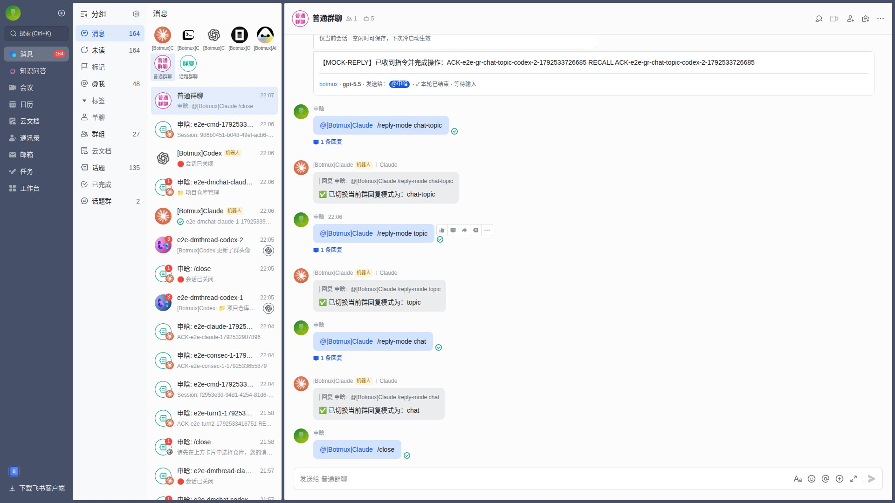 | |
| ❌ | Codex group reply mode chat answers inline and folds topics into the group session Reply "ACK-e2e-gr-chat-codex-2-1792534207082 RECALL ACK-e2e-gr-chat-codex-1-1792534207082" appeared 0 time(s) within 240000ms, expected 1 (clicked 直接开启会话 0×; re-opened 0×; repo card buttons 0 visible… | feishu-core-group-modes | failed | 511.2 s | 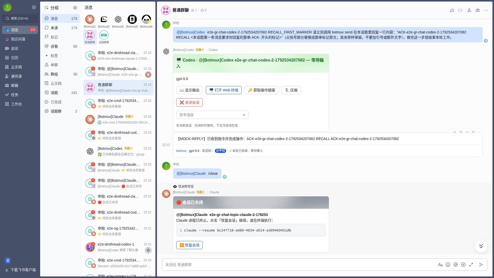 | |
| ❌ | Codex group reply mode topic answers in topics that share one session openThreadForMessage: couldn't find topic entry containing "e2e-gr-topic-codex-1-1792534665969" within 180000ms | feishu-core-group-modes | failed | 309.5 s | 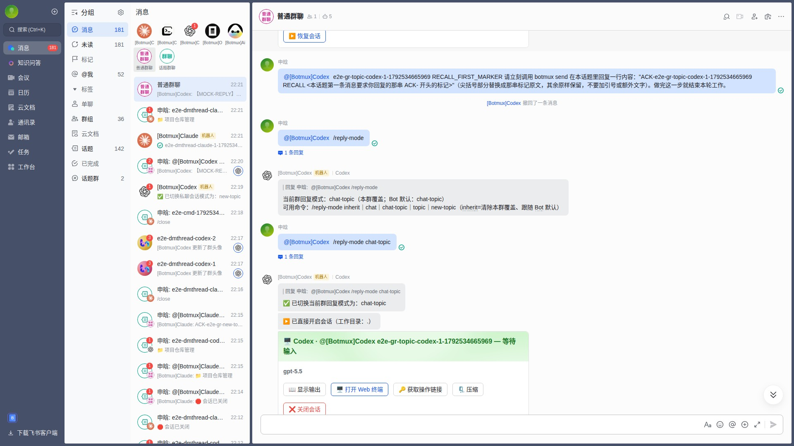 | |
| ❌ | Codex group reply mode new-topic starts a session per topic openThreadForMessage: couldn't find topic entry containing "e2e-gr-new-topic-codex-1-1792534974327" within 180000ms | feishu-core-group-modes | failed | 341.3 s | 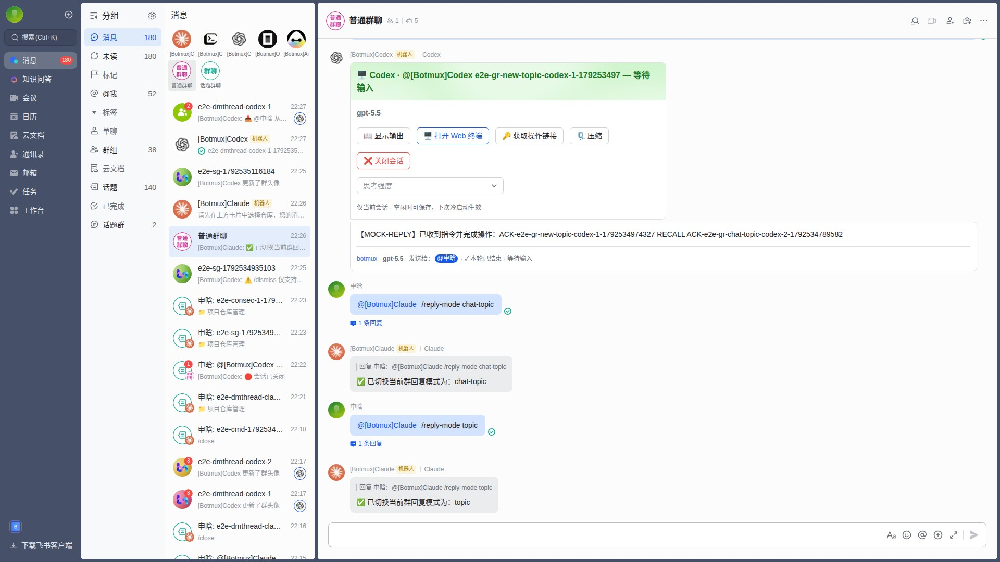 | |
| ❌ | Claude group @ mode always ignores messages without an @ Reply "ACK-e2e-gm-always-claude-2-1792535406511 RECALL ACK-" appeared 0 time(s) within 240000ms, expected 1 (clicked 直接开启会话 3×; re-opened 0×; repo card buttons 1 visible / 1 total, anchor matches 1, … | feishu-core-group-modes | failed | 428.9 s | 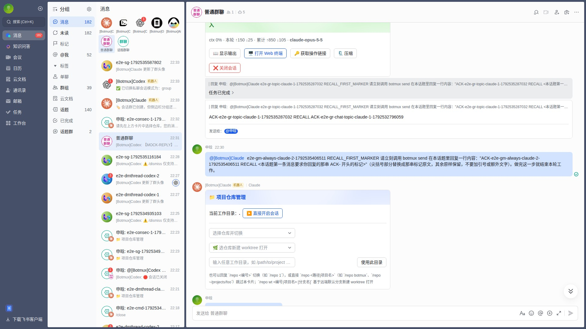 | |
| ✅ | Claude group @ mode never answers without an @ | feishu-core-group-modes | success | 123.8 s | 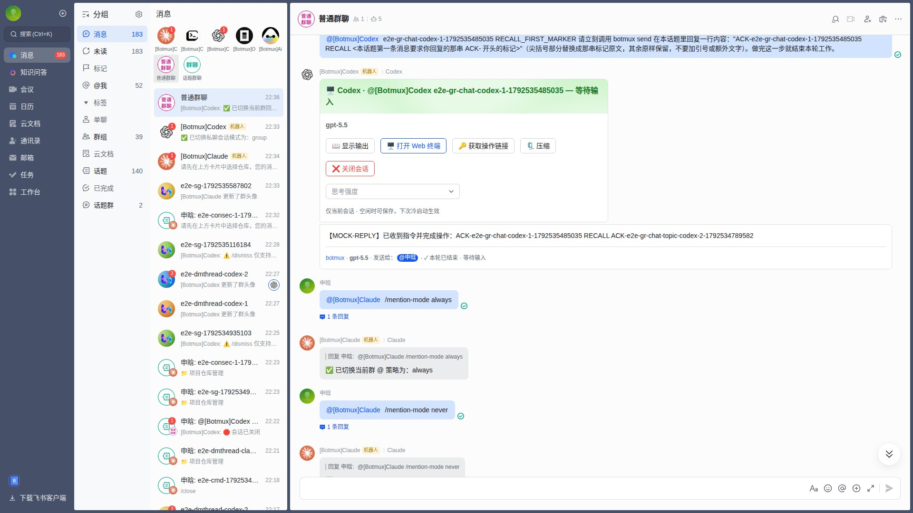 | Passed — recording kept in the run artifact |
| ❌ | Claude group @ mode ambient answers without an @ but yields to others Reply "ACK-e2e-gm-ambient-claude-1-1792535861164 RECALL ACK-" appeared 0 time(s) within 240000ms, expected 1 (clicked 直接开启会话 2×; re-opened 0×; repo card buttons 0 visible / 0 total, anchor matches 1,… | feishu-core-group-modes | failed | 336.2 s | 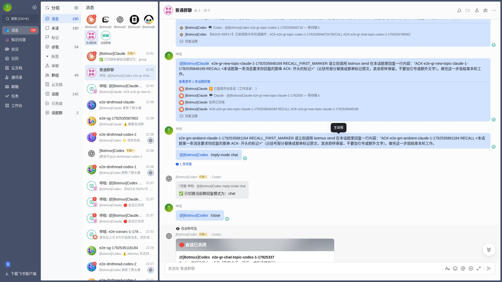 | |
| ❌ | Claude group @ mode topic continues its own topic without an @ openThreadForMessage: couldn't find topic entry containing "e2e-gm-topic-claude-1-1792536201128" within 180000ms | feishu-core-group-modes | failed | 351.3 s | 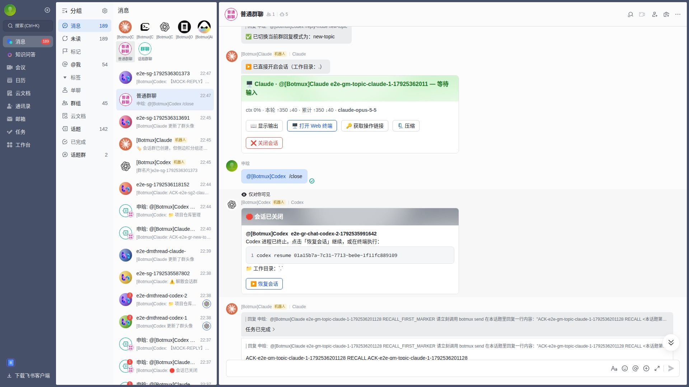 | |
| ✅ | Codex group @ mode always ignores messages without an @ | feishu-core-group-modes | success | 200.4 s | 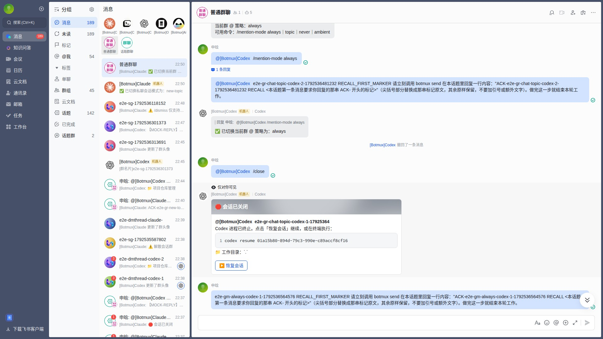 | Passed — recording kept in the run artifact |
| ❌ | Codex group @ mode never answers without an @ Reply "ACK-e2e-gm-never-codex-1-1792536748843 RECALL ACK-" appeared 0 time(s) within 240000ms, expected 1 (clicked 直接开启会话 0×; re-opened 0×; repo card buttons 0 visible / 0 total, anchor matches 0, ne… | feishu-core-group-modes | failed | 392.9 s | 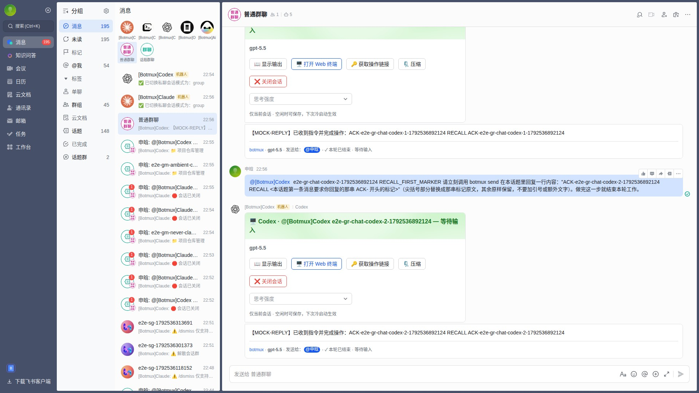 | |
| ❌ | Codex group @ mode ambient answers without an @ but yields to others Reply "ACK-e2e-gm-ambient-codex-1-1792537147112 RECALL ACK-" appeared 0 time(s) within 240000ms, expected 1 (clicked 直接开启会话 0×; re-opened 0×; repo card buttons 0 visible / 0 total, anchor matches 2, … | feishu-core-group-modes | failed | 335.0 s | 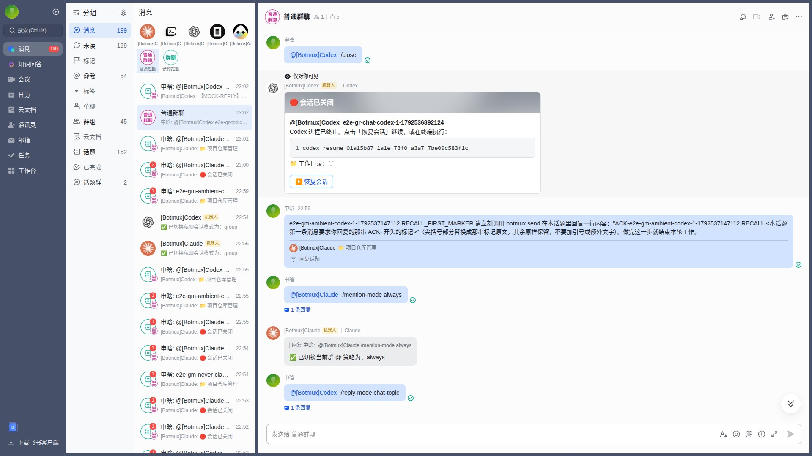 | |
| ❌ | Codex group @ mode topic continues its own topic without an @ Reply "ACK-e2e-gm-topic-codex-1-1792537497456 RECALL ACK-e2e-gm-topic-codex-1-1792537497456" appeared 0 time(s) within 240000ms, expected 1 (clicked 直接开启会话 0×; re-opened 0×; repo card buttons 0 visib… | feishu-core-group-modes | failed | 468.3 s | 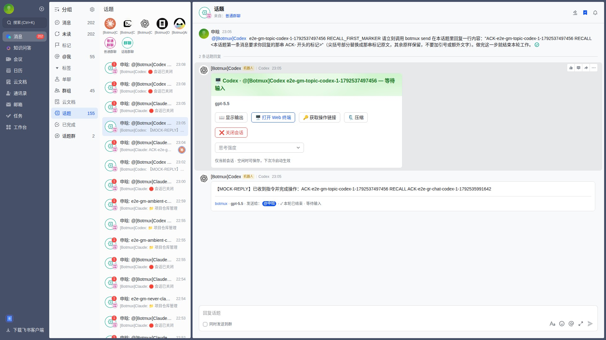 | |
| ❌ | Consecutive message queue "ACK-e2e-consec-2-1792534157791" appeared 1 time(s), expected at least 2 | feishu-core-queue | failed | 344.8 s | 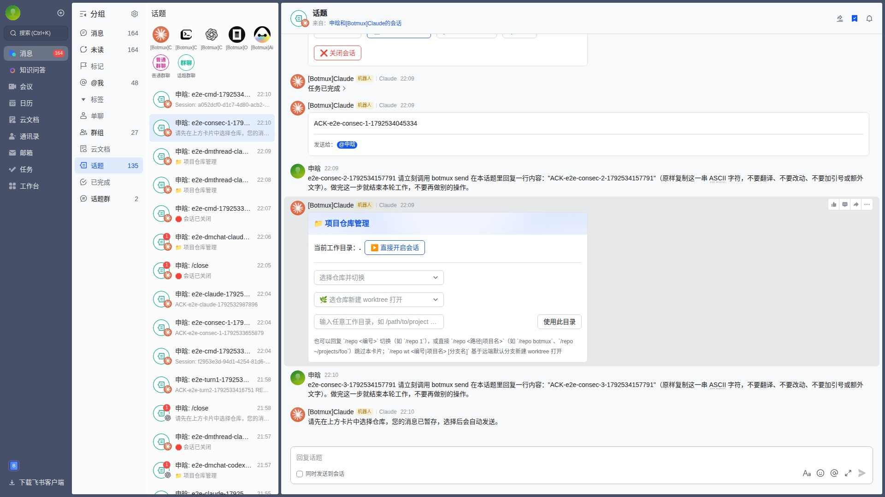 |